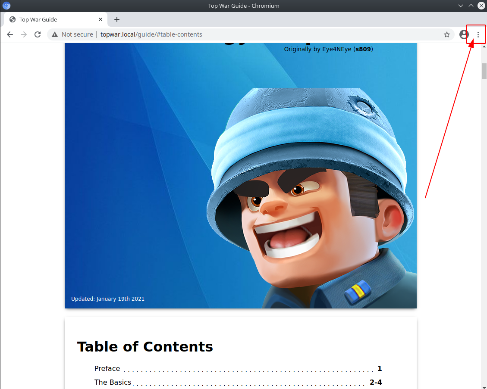
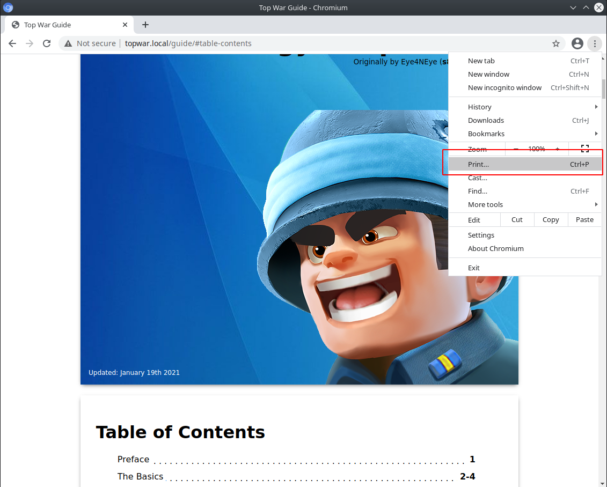
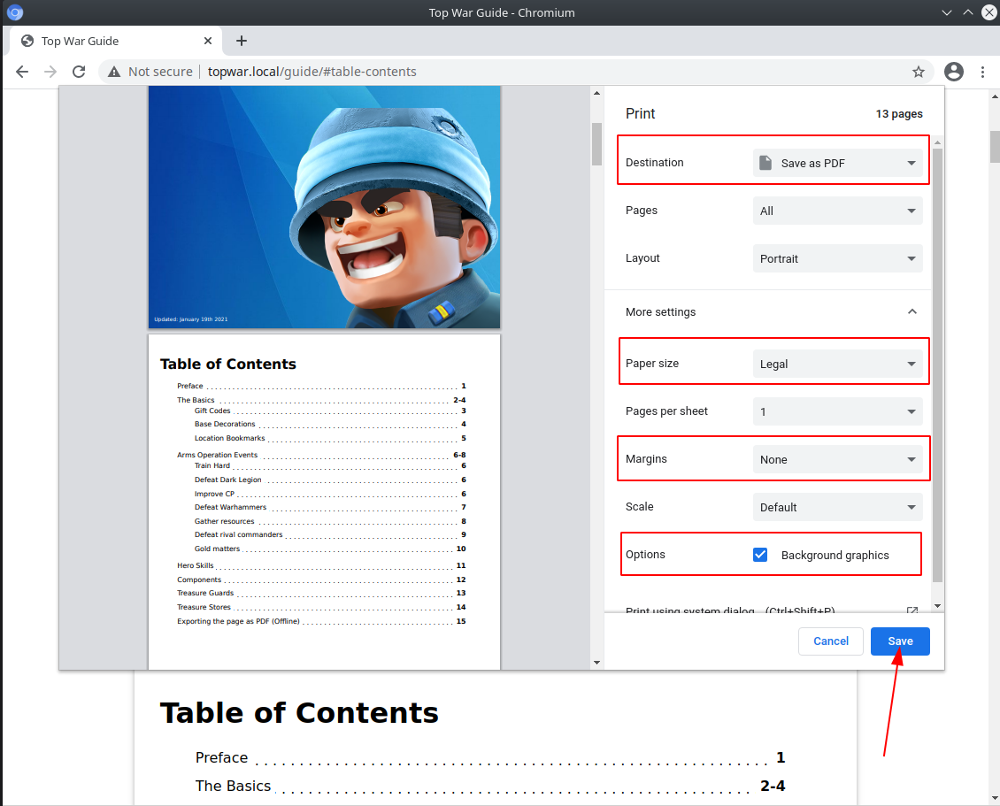

We recommend using any chrome derivative browser to save the page as PDF. Because it has a friendly interface to pick the exact options to make the page look better in PDF format.
  As you can see in the screenshot for the settings make sure the following options are changed/enabled